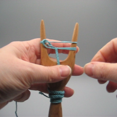
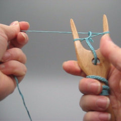
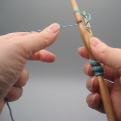

Material och verktyg
Du behöver en slynggaffel, garn, en sax och ett nål med ett öga som är stor nog för garnet.
Slynggaffel
Slynggafflar har mycket variation i form, storlek och material. Man kan inte använda tjockt garn med en liten slynggaffel, men med en stor en kan man slynga även med sytråd om man har tålamodet. Jag föredrar en slynggaffel som är ca 5 cm bred och har ett handtag, men andra föredrar en gaffel utan handtag.
Om du vill tillverka en slynggaffel för dig själv eller om du bara vill se de olika sorterna, jag har foton av min slynggaffelsamling i min blogg. Förutom slynggafflar i trä har jag också slynggafflar gjorda av ben eller med en 3D-skrivare. Du kan också kolla slynggafflar på olika museer.

Anatomin av en slynggaffel
En slynggaffel har två horn (1). Hornen kan vara ganska spetsiga eller helt rundade. Vissa slynggafflar har ett hål (3) i mitten, men det behövs inte nödvändigtvis, man kan klara sig bra utan. Slynggafflar kan ha ett handtag (4), men en slynggaffel utan handtag funkar också bra. Jag föredrar en slynggaffel med handtag för att då har den färdiga snodden (2) någonstans att gå.

Garn
Speciellt i början måste ditt garn vara slätt. Det borde också tåla en del dragning. Vissa 100 % ullgarn är så luddiga att det kan bli problem med att slynga med dem, men merinoull och släta sockgarn fungerar bra. Jag har inte prövat att slynga med akrylgarn, men slät akryl funkar väl lika bra som slät ull. När jag övar mig använder jag mest bomull, t.ex. virkgarn eller s.k. pärlgarn storlek 5. Man kan också använda sig av linnegarn, men det kan vara svårt att hitta någonting som är tillräckligt tjockt - om man börjar med ett mycket tunt garn är det svårare att se vad man håller på med och det tar också länge att få ihop snodden. Viskos och siden går också, men om garnet är mycket glatt, kan de första snoddarna bli aningen lösa.
När du har lärt dig grunderna, kan du experimentera med många sorters garn. Garn med kännbara förtjockningar fungerar inte, men jämnt luddiga garn går an när du lärt dig att justera snoddens fasthet efter garnet. I min blogg kan du se några exempel på experiment. Om du inte behöver vara tidsenlig, flerfärgade garn blir roliga snoddar. Även garn som ser råddiga ut i stickning blir fina snoddar.
Märk väl att en slynggaffelsnodd tar upp mycket garn. Min tumregel är 10:1, tio meter garn blir cirka en meter snodd. Regeln tycks gälla för de flesta garnvikterna.
Slyngning
Principen
Slyngning går ut på en enkel serie rörelser som upprepas om och om igen. Slyngning med slynggaffel är faktiskt en form av stickning (två maskors i-cord).
När man slynger med en gaffel, har man alltid en ögla runt vänster horn och en ögla och garnet runt höger horn. Mellan dessa öglor finns den färdiga snodden med en mindre ögla i mitten. Man slynger genom att dra den högra öglan utåt tills den lilla öglan i mitten försvinner. Sedan lyfter man den ögla man håller i över hornet. Man drar lite i garnet och vänder gaffeln på så sätt att det högra hornet färdas närmast ens kropp. Om allt gick bra, hamnar man tillbaka i startpositionen med en ögla till vänster och en ögla och garnet runt höger horn, och således kan man börja om från början. Märk att i vanlig slyngning går garnet aldrig mellan hornen, alltid bara på utsidan av gaffeln.
Början
Det är faktiskt svårare att börja slynga än att slynga efter att man har en liten bit snodd. Försök att inte ge upp om du behöver ett par omgånger innan du klarar av början.
- Ta slynggaffeln i vänster hand och garnet i höger hand.
- För garnet bakom gaffeln.
- Gör en ögla med garnet runt högra hornet. Garnänden borde nu vara framför gaffeln (närmare dig).
- Dra i garnänden tills du har ca 15 cm garn framför gaffeln. Om din slynggaffel har ett hål, trä garnet genom hålet. Oansett om garnänden är på baksidan eller framsidan, tryck in den under fingrarna som håller i slynggaffeln.
- Nu fatta tag i garnet som kommer från nystanet, det borde vara bakom gaffeln. Vira garnet runt utsidan av gaffeln så att det kommer först bakifrån fram runt vänstra hornet, sen tillbaka bak runt högra hornet. Garnet gör en full runda runt gaffeln men går aldrig mellan de två hornen.
- Flytta garnet från nystanet till vänstra handen. I början kan det kännas lite krångligt att hålla i gaffeln och garnet och garnänden, men man vänjer sig så småningom.
- Till höger borde du nu ha en ögla lägre ner och ett garn högre upp. Fatta tag i öglan och dra den horisontalt ut från gaffeln. Lyft öglan över högra hornet.
- Vänd gaffeln medsols, d.v.s. så att högra hornet går närmast dig. Om du gjorde rörelsen rätt, har du igen ögla och garn till höger.
- Dra i högra öglan och lyft den över högra hornet. Om knuten i mitten (början på snodden) är lös, dra lite i garnändan. Vänd gaffeln sedan igen medsols (alltid åt samma håll).
- Dra i högra öglan tills den lilla öglan i mitten sätter sig på snodden, sedan lyft öglan du håller i över hornet. Vänd gaffeln. Om öglan i mitten är stor, kan du dra lite i garnet från nystanet (men dra inte för mycket, du behöver den lilla öglan i mitten).
Nu har du en liten början och kan fortsätta vidare.
Slyngning
|  | Först kolla att din slynggaffel är i rätt position: en ögla till vänster, en liten ögla i mitten, en ögla och garnet runt höger horn. |
 |
Fatta tag i öglan till höger. Det är lättare om du tar i öglan framför gaffeln, inte vid sidan. |
 |
Dra öglan till höger, bortåt gaffeln, tills den lilla öglan i mitten har försvunnit. Märk att den här rörelsen bestämmer hur lös eller fast din snodd blir. Om din snodd är mycket lös, dra öglan lite längre ut. Om din snodd är mycket fast och slyngandet känns stickigt, dra ut öglan lite försiktigare. Hur långt ut öglan skall dras beror på mittöglans storlek och garntyp. Om du byter till annat garn, måste du kanske justera den här rörelsen. |
 |
Lyft öglan över högra hornet. |
|  | Flytta gaffeln till höger hand. Med vänster hand dra försiktigt i garnet från nystanet så att öglan i mitten (den du just lyfte över hornet) blir lite mindre. Kom ihåg att du måste lämna en liten ögla i mitten, du får inte dra allt för mycket. |
|  | Vänd gaffeln vertikalt motsols, dvs så att högra hornet passerar till vänster närmast din kropp. |
 |
Flytta gaffeln tillbaka till vänster hand. Om du vände den korrekt, garnet virades runt det som blev högra hornet och du är tillbaka i startpositionen och kan börja om från början. |
Det här är inte det enda sättet att jobba med en slynggaffel. Om du tycker att det är klumpigt att hålla garnet med vänster hand och inte gillar att flytta gaffeln fram och tillbaka, kan du pröva att slynga med garnet i höger hand som jag gör i videon nedan. Ziggy Rytka har också en video om det. Det är med den här tekniken jag är snabbast för att den har egentligen bara två rörelser: med den första drar jag öglan ut från gaffeln, med den andra lyfter jag öglan över hornet och vänder gaffeln och drar i garnet allt på en gång.
Avslutning
- När du vill avsluta snodden, skär av garnet 15-20 cm från gaffeln.
- Lyft den nästa öglan normalt, men sedan dra garnet igenom öglan. Vänd inte gaffeln och rör inte vid vänstra öglan. Dra i garnet tills den som var högra öglan stramas åt runt garnet. Nu har du kvar bara en ögla till vänster.
- Trä garnet genom den vänstra öglan. Det tyckes inte spela någon roll om garnet går uppifrån och ner eller nerifrån upp, huvudsaken är att garnet går genom öglan.
- Lyft öglan från gaffeln. Dra i garnet tills öglan stramas åt runt garnet. Nu har du en säker avslutning på din snodd.
Finjustering
Garnändarna i början och slutet av snodden kan gömmas i snodden. Du behöver nålet för det. Jag använder för det mesta ett broderinål, för tjockare garn ett stoppnål. Försök välja ett nål där ögat är precis stor nog att garnet ryms i.
Några böcker om slyngning skriver att man kan gömma en ände inne i en snodd eftersom den är en tub. Jag har aldrig klarat av det, jag syr garnet runt snodden istället. Jag syr för ett par centimeter och sedan skär av garnet nära snodden. På det här sättet blir snodden lite tjockare i ändarna, men oftast gör det ingenting.
Garnet som jag använder i videon är mycket tjock, men jag använder samma teknik med ganska tunna garn - knyppelgarn i lin var dock för tunt, jag kunde inte se snodden bra nog för att sy in ändarna.